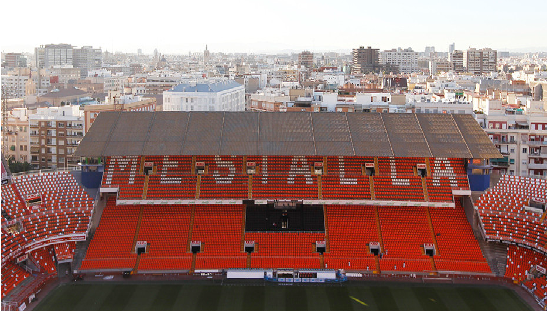
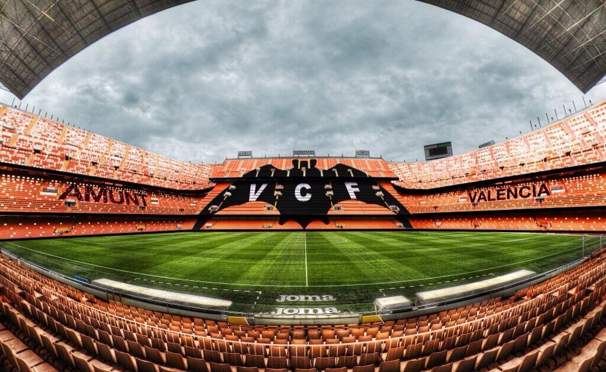

El estadio de Mestalla, nombre oficial "Mestalla, Camp del València", es el estadio del Valencia Club de Fútbol. Está situado en el barrio de Mestalla de la ciudad de Valencia (España), entre la avenida de Suecia y la avenida de Aragón.2 Inaugurado en 1923 debe su nombre a la histórica acequia de Mestalla, que pasaba junto a la grada sur del estadio y había que superarla para llegar a él durante sus primeras décadas. Entre 1969 y 1994 se denominó Estadio Luis Casanova en honor a Luis Casanova Giner, considerado uno de los mejores presidentes de la historia del club. El estadio posee actualmente una capacidad para 55.000 espectadores,3 4 y ha acogido desde sus primeros años un total de 31 partidos internacionales de la Selección española de fútbol (entre ellos los de la fase final del Mundial de España 1982), más 5 encuentros de la Selección Olímpica de España durante los Juegos Olímpicos de 1992, y ha sido sede de 10 finales de la Copa del Rey, la última en 2014.
 
@jvargas96